Practical Data Value Speculation for Future High-end Processors 图表详解#
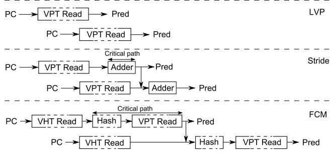
图像核心含义
该图比较了三类 Value Predictor 在“同一条静态指令的两次动态实例连续两个周期被 Fetch”时的预测流程与关键路径：
LVP / Last Value Predictor Stride Predictor FCM / Finite Context Method
图中每一类预测器都有两条水平流程线，分别表示：
第一次 occurrence 的预测流程
紧接着下一周期 Fetch 到的第二次 occurrence 的预测流程
图中虚线框标出的部分表示 Critical path ，即为了支持 back-to-back prediction 必须在极短时间内完成并前递的关键操作。
图中元素
含义
PC Program Counter，指令地址，用于索引预测器
VPT Read Value Prediction Table 读取，得到预测值
VHT Read Value History Table 读取，得到局部 value history
Hash 对历史值进行哈希，生成访问 VPT 的索引
Adder 加法器，用于 Stride Predictor 中计算 last value + stride
Pred 产生的预测值
Critical path 两次连续预测之间必须及时完成并前递的路径
水平箭头
数据依赖或预测流程方向
向下箭头
前一次预测结果被下一次预测使用
横向虚线
分隔不同预测器类型
区域
对应预测器
主要流程
是否存在严重 back-to-back critical path
上部
LVP PC → VPT Read → Pred
基本不存在
中部
Stride PC → VPT Read → Adder → Pred
存在，但较短
下部
FCM PC → VHT Read → Hash → VPT Read → Pred
存在，且较长、复杂
LVP 区域分析
图像上部展示 LVP 。
两次连续 occurrence 的流程都是：
第一条和第二条预测流之间没有数据前递依赖。
也就是说，第二次预测不需要等待第一次预测值计算完成。
原因是 LVP 只依赖 PC 访问表项 ，预测的是该静态指令上一次观察到的值。
只要表中已有训练好的 last value，连续两次访问可以独立进行。
因此：
LVP 对 back-to-back occurrences 友好 预测访问可以跨多个 pipeline stage 大表实现较可行 预测延迟只需在 Dispatch 前完成即可
LVP 的关键结论
没有从第一次 Pred 到第二次预测索引的关键反馈路径 。对 tight loop 中连续出现的同一指令，LVP 仍然容易提供预测。
这也是论文中将 VTAGE 类比为 LVP 行为的重要原因：VTAGE 也不依赖前一次 value，而依赖 control-flow history 。
Stride Predictor 区域分析
图像中部展示 Stride Predictor 。
第一次 occurrence 的流程为：
PC → VPT Read → Adder → Pred
第二次 occurrence 的流程同样为：
PC → VPT Read → Adder → Pred
但与 LVP 不同，Stride 的预测需要：
last value stride 然后通过 Adder 计算：
Pred = last value + stride
图中从第一次 Adder/Pred 向下连接到第二次 Adder 的箭头表示：
第二次预测可能需要使用第一次预测得到的 speculative value 作为新的 last value。
因此，当同一指令连续两个周期 Fetch 时，第一次预测结果必须快速前递给第二次预测的加法器。
Stride 的 Critical path
图中虚线框标注的 Critical path 位于：
第一次 occurrence 的 Adder
到第二次 occurrence 的 Adder 输入
该路径的本质是：
该路径相比 FCM 较简单，因为只涉及：
一个 last value
一个 stride
一个加法操作
因此论文认为：
Stride Predictor 支持连续 occurrence 是可实现的 但仍需额外的 speculative tracking 和 bypass 逻辑。
Stride Predictor 的硬件含义
需要跟踪同一静态指令最近一次 occurrence 的 speculative value。
如果前一次 occurrence 尚未执行或尚未 commit，则不能仅依赖 committed value。
必须支持：
speculative last value tracking prediction-to-prediction forwarding 快速 adder bypass
复杂度中等，但仍可接受。
FCM 区域分析
图像下部展示 FCM / Finite Context Method 。
第一次 occurrence 的流程为：
PC → VHT Read → Hash → VPT Read → Pred
第二次 occurrence 的流程为：
PC → VHT Read → Hash → VPT Read → Pred
与 LVP 和 Stride 相比，FCM 是典型 two-level context-based predictor ：
第一级：VHT / Value History Table
根据 PC 读取该指令的局部 value history。
第二级：VPT / Value Prediction Table
对 value history 进行 Hash 后访问，得到预测值。
FCM 的预测依赖最近若干次 value history，而不是只依赖 PC 或单个 last value。
FCM 的 Critical path
图中虚线框标注的 Critical path 覆盖：
第一次 occurrence 的 Hash
第一次 occurrence 的 VPT Read
到第二次 occurrence 的 Hash
图中从第一次 Pred 向下连接到第二次 Hash 前方，表示：
第二次 occurrence 的 value history 需要包含第一次 occurrence 的预测值。
因此，第一次预测必须完成后，才能更新/形成第二次预测所需的 history，并进一步计算第二次 VPT index。
这导致一个很长的串行链：
VHT Read → Hash → VPT Read → Pred → update speculative history → Hash → VPT Read
这比 Stride 的关键路径复杂得多。
FCM 的核心问题
FCM 难以支持 tight loop 中同一指令的 back-to-back prediction 。原因包括：
需要追踪最近 n 个 speculative values
需要快速更新 local value history
需要重新 Hash
需要再次访问第二级 VPT
两级表访问之间存在严格数据依赖
如果 pipeline 每周期 Fetch 一次该指令，FCM 很难在一个周期内完成这些操作。
预测器
输入上下文
预测流程
对前一次 occurrence 的依赖
back-to-back 支持难度
主要瓶颈
LVP PC
PC → VPT Read → Pred
无直接依赖 低 表访问延迟
Stride PC + last value + stride
PC → VPT Read → Adder → Pred
依赖前一次 speculative value 中等 Adder 结果前递
FCM PC + local value history
PC → VHT Read → Hash → VPT Read → Pred
强依赖前 n 次 values 高 VHT/Hash/VPT 串行关键路径
为什么该图服务于论文的 VTAGE 动机
论文提出 VTAGE 的重要动机之一，就是避免 FCM 这类 local value history predictor 的关键路径问题。
VTAGE 使用：
global branch history path history PC
而不是使用本指令前几次产生的 value history。
因此 VTAGE 的预测不需要等待前一次 occurrence 的 predicted value。
从 back-to-back prediction 行为看，VTAGE 更接近图中的 LVP ：
可以连续预测
不需要复杂 speculative value history tracking
预测访问可以跨多个周期完成
更适合大容量 predictor table
图中隐含的 pipeline 时序问题
Value Prediction 通常不像 branch prediction 那样必须在 Fetch 早期完成。
它只需要在 Dispatch / Rename 前后 提供预测值即可。
因此表访问延迟本身不是最大问题。
真正的问题是：
对于需要前一次预测结果作为下一次预测输入的预测器，连续 occurrence 会形成 prediction-to-prediction dependency loop 。
图中重点展示的正是这种 loop：
LVP：无 loop
Stride：短 loop
FCM：长 loop
对硬件实现复杂度的启示
LVP
实现简单。
表可做得较大。
但预测能力有限，只能利用 last value locality。
Stride
对规律递增/递减值有效。
需要 speculative last value 维护。
需要快速 bypass。
FCM
理论上能捕获复杂 value pattern。
但实际硬件实现困难。
特别是在宽 Fetch、深流水、高频处理器中，关键路径过长。
VTAGE
论文希望通过 global branch history 替代 local value history。
以牺牲部分 value-history 表达方式为代价，换取更实际的时序可实现性。
该图对应论文中的核心论点
预测器准确率不是唯一问题，可实现性同样关键。 即使 FCM 类预测器在理想模拟中有较好预测潜力，也可能因为：
two-level lookup
local history update
speculative value tracking
back-to-back critical path
而难以实际部署。
VTAGE 的优势不只是性能，还包括：
无 local value feedback critical path 天然支持连续 occurrence 适合现代 wide/deep pipeline 可使用较大表结构
图像最终结论
LVP ：预测流程最简单，连续预测友好，但表达能力有限。Stride ：需要前一次 speculative prediction 前递，存在短 critical path，但仍较可实现。FCM ：需要两级访问和 value history 更新，存在长 critical path，对 tight loop 极不友好。该图直接支撑论文提出 VTAGE 的必要性：
使用 control-flow history 的 value predictor 可以避免 local value history predictor 在连续预测场景下的复杂关键路径问题。
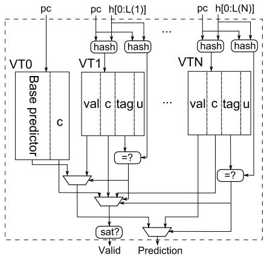
图像对象 ：该图展示的是论文提出的 VTAGE（Value TAgged GEometric history length）value predictor 结构，即一个 (1+N)-component VTAGE predictor 。核心含义 ：VTAGE 由 1 个 base predictor（VT0） 加上 N 个 tagged components（VT1…VTN） 组成，用于基于 PC、global branch history、path/history hash 对指令结果值进行预测。图中关键说明 ：
Val ：预测值，即 value prediction 输出。c ：hysteresis/confidence counter，用作 confidence counter 。tag ：部分标签，用于判断当前表项是否匹配。u ：useful bit，用于替换策略，判断表项是否值得保留。sat? ：判断 confidence counter 是否饱和，只有饱和时预测才被认为有效。Prediction ：最终输出的预测值。Valid ：预测是否可用的有效信号。
图中模块
对应含义
作用
VT0 / Base predictor tagless Last Value Predictor 类似结构
仅用 PC 索引，提供基础预测
VT1…VTN tagged components
使用不同长度的历史信息进行预测
hash 哈希逻辑
将 PC 与不同长度的 history 组合生成索引/标签
val value field
存储预测值
c confidence counter
判断预测是否足够可信
tag partial tag
验证表项是否匹配当前预测上下文
u useful bit
辅助替换策略，避免替换有用表项
=? tag comparator
判断当前表项 tag 是否命中
sat? saturation test
判断 confidence counter 是否饱和
MUX 多路选择器
从多个候选预测中选择最终 provider
整体结构分析 ：
图中虚线框表示整个 VTAGE predictor 。
左侧 VT0 是基础预测器，结构最简单，只根据 pc 访问。
右侧 VT1 到 VTN 是多个 tagged predictor components。
每个 tagged component 使用不同长度的历史信息：
VT1 使用较短 history，例如 h[0:L(1)] 。VTN 使用更长 history，例如 h[0:L(N)] 。
历史长度按照 geometric series 增长，这是 TAGE 系列预测器的核心思想。
预测输入路径 ：
每个 component 都接收 pc 。
Tagged components 额外接收不同长度的 global branch history 。
图中上方的 hash 模块表示：
一部分 hash 用于生成 table index。
另一部分 hash 用于生成或匹配 partial tag。
因此，VTAGE 并不是基于 local value history，而是基于 control-flow context 。
输入信号
进入模块
用途
pc VT0, VT1…VTN
基础索引信息
h[0:L(1)] VT1
短历史上下文
h[0:L(N)] VTN
长历史上下文
hash(pc, history) tagged components
生成索引和 tag
tag comparison comparator
判断当前 component 是否命中
VT0 Base predictor 分析 ：
VT0 没有 tag 字段，因此是 tagless predictor 。其内部主要包含：
预测值字段。
c confidence counter 。
它类似于 LVP（Last Value Predictor） 。
当没有 tagged component 命中时，VT0 可以作为 fallback provider。
优点是访问简单、覆盖范围广。
缺点是上下文区分能力弱，容易受 aliasing 或控制流变化影响。
VT1…VTN Tagged components 分析 ：
每个 tagged component 的 entry 包含：
与 VT0 不同，tagged components 通过 tag match 判断当前 entry 是否对应当前上下文。
越靠右的 component 使用越长的 history。
使用更长 history 的 component 能捕获更复杂的控制流相关 value pattern。
Component
是否有 tag
使用 history
预测能力
典型角色
VT0 否
无，仅 PC
简单 last-value pattern
fallback
VT1 是
短 history
捕获短控制流相关模式
low-order context
VT2…VTN-1 是
中等 history
捕获中等复杂上下文
intermediate provider
VTN 是
长 history
捕获长距离控制流相关模式
high-order provider
tag match 机制 ：
图中每个 tagged component 下方都有 =? 比较器。
该比较器用于比较：
当前由 pc + history hash 得到的 tag。
表项中存储的 tag 。
如果相等，则该 component 被认为 hit 。
多个 component 可能同时 hit。
VTAGE 的选择原则是：选择使用最长 history 的 matching component 作为 provider 。
provider selection 分析 ：
图中多个 component 的输出汇入底部的选择逻辑。
当多个 tagged components 同时 tag match 时：
使用历史长度最长的 component。
即优先选择最右侧、更高编号的 component。
如果没有 tagged component 命中：
这种机制继承自 TAGE/ITTAGE ：
短历史 component 提供稳定性。
长历史 component 提供精确上下文区分能力。
命中情况
Provider 选择
无 tagged component 命中
使用 VT0
只有 VT1 命中
使用 VT1
VT1、VT2 同时命中
使用历史更长的 VT2
VT1…VTN 多个命中
使用最长 history 的 matching component
provider confidence 不饱和
预测可能不被使用
confidence 机制分析 ：
每个 entry 都有 c 字段。
图中底部的 sat? 表示检查 provider 的 confidence counter 是否饱和。
只有当 c saturated 时，预测才被输出为有效预测。
因此，最终预测需要满足两个条件：
tag/component 命中 。confidence counter 饱和 。
这与论文中的 FPC（Forward Probabilistic Counters） 密切相关。
FPC 的目标是降低 coverage，换取极高 accuracy。
条件
结果
provider 命中且 c saturated
Valid = true ，输出 Prediction
provider 命中但 c 未饱和
不使用预测
无可靠 provider
不使用预测或 fallback 到低级 component
预测错误
c reset 或降低，可能触发新 entry 分配
预测正确
c 以概率方式前进，逐步建立信心
u useful bit 分析 ：
每个 tagged component 中的 u 字段用于替换策略。
当发生 misprediction 或需要分配新 entry 时：
VTAGE 会尝试在更长 history 的 component 中分配新 entry。
优先选择 u = 0 的 entry。
如果所有候选 entry 都被认为 useful：
可能清除某些 useful bit。
或暂时不分配新 entry。
该机制避免频繁替换真正有用的 long-history entries。
预测输出路径 ：
每个 component 的 val 字段都可能成为候选预测值。
图中底部多个 MUX 表示：
先根据 tag match 选择 provider。
再根据 provider 的 confidence counter 判断是否 valid。
最后输出 Prediction 。
如果 sat? 判断通过，则 Valid 信号置位。
如果 confidence 不足，即使有预测值，也不会被处理器使用。
输出
来源
含义
Prediction provider component 的 val
最终预测值
Valid sat? 判断结果
是否允许使用该预测
provider identity 最长匹配 component
用于后续 update/training
confidence state c
控制预测是否启用
与传统 value predictor 的区别 ：
传统 FCM 通常依赖 local value history。
Stride predictor 依赖上一实例的值和 stride。VTAGE 依赖的是 global branch history + path history 。因此 VTAGE 不需要等待上一动态实例产生值。
这使它特别适合预测 back-to-back occurrences ，即紧密循环中连续出现的同一指令。
Predictor
依赖信息
是否适合 back-to-back prediction
主要问题
LVP PC
是
上下文区分弱
Stride last value + stride
较难
需要跟踪 speculative last value
FCM local value history
难
需要连续更新 value history，存在 critical loop
VTAGE PC + global branch history
是 需要多表 hash 与 tag match
VTAGE + FPC PC + history + high confidence
是 coverage 会降低
图中体现的 VTAGE 关键优势 ：
多历史长度并行查找 ：所有 components 可同时访问。最长匹配优先 ：提高上下文区分能力。confidence-gated prediction ：只有高可信预测才使用。不依赖 local value history ：避免 FCM 类预测器的关键路径问题。可跨多个 pipeline cycles 完成访问 ：因为预测只需在 Dispatch 前可用。适合大容量实现 ：不像 FCM 那样受连续实例预测延迟强约束。
与论文主张的关系 ：
该图支撑论文的第二个核心贡献：提出 VTAGE 。
VTAGE 借鉴了 ITTAGE/TAGE branch predictor 思想。
论文认为：
Indirect branch target 本质上也是一种 value。
因此可将 ITTAGE 的多历史 tagged 结构迁移到 value prediction。
图中 VT0 + VT1…VTN 正是这种迁移后的硬件结构。
更新机制对应关系 ：
图中没有完整画出 update path，但字段设计暗示了更新逻辑。
当预测正确：
provider 的 c 增强。
u 可能被标记为 useful。
当预测错误：
如果 c = 0 ，可替换当前 val 。
可能在更长 history component 中分配新 entry。
新 entry 存储新的 val/tag/c/u 。
这种方式使 VTAGE 能逐步学习更具体的上下文模式。
事件
VTAGE 行为
正确预测
增强 confidence counter
错误预测且 c 较低
替换 val
错误预测
尝试在 longer-history component 分配新 entry
没有可替换 entry
清理 useful bit 或放弃分配
entry 经常正确
u 被维护为 useful
为什么使用 geometric history length ：
图中 history 长度从 L(1) 到 L(N) 。
论文中例子为 2, 4, 8, 16, 32, 64 。
几何增长带来平衡：
短 history 捕获局部控制流模式。
长 history 捕获跨分支、跨循环的复杂模式。
表数量有限，覆盖多种相关距离。
这是 TAGE 系列预测器成功的核心设计。
硬件实现角度分析 ：
所有 tagged components 并行访问，理论上延迟较高。
但 value prediction 在 pipeline 中不必像 branch prediction 一样极早完成。
预测从 Fetch 开始，到 Dispatch 前可用即可。
因此 VTAGE 可以容忍：
多级 hash。
多表读取。
tag 比较。
provider 选择。
这也是论文强调 VTAGE 比 FCM 更 practical 的原因。
潜在硬件开销 ：
每个 tagged entry 需要存储完整 64-bit val ，开销较大。
还需要 tag、confidence counter、useful bit。
多表并行访问增加能耗。
但相比 selective reissue 复杂恢复机制，VTAGE + FPC 的设计将复杂度主要限制在 predictor 与 commit validation 侧。
论文认为这更适合未来 high-end processors。
硬件成本项
来源
影响
Value storage 每个 entry 存储 64-bit val
面积较大
Tag storage tagged components
降低 aliasing，但增加存储
Hash logic PC + history indexing
增加组合逻辑
Comparators tag match
增加访问延迟与能耗
MUX network provider selection
增加选择路径复杂度
Confidence counters c / FPC
小额存储，显著提升准确率
图中最重要的设计思想 ：
prediction value 与 confidence 分离 ：
即使有 val，也不一定使用。
必须通过 sat? 。
context specificity 分层 ：accuracy 优先于 coverage ：
图中的 confidence gating 体现论文核心判断：
在 commit-time validation 下，低误预测率比高覆盖率更重要。
longest-history provider selection ：
该图对论文结论的支撑 ：
说明 VTAGE 可以用类似 branch predictor 的方式预测 value。
说明 VTAGE 不需要本地 value history，因此能避免 tight loop 中 back-to-back prediction 的 critical path。
说明通过 c confidence counter ，VTAGE 可与 FPC 结合，达到极高 accuracy。
说明预测器本身可以作为一种较现实的硬件方案，而不是依赖理想化 selective reissue。
总结性评价 ：
Figure 2 是 VTAGE 的核心结构图 。它展示了从 PC-only base prediction 到 multi-history tagged prediction 的层次化设计。
该设计本质上将 TAGE/ITTAGE 的控制流相关预测能力 引入 data value prediction 。
其关键优势是：
高准确率潜力 。适合 back-to-back prediction 。可配合 FPC 进行高置信筛选 。比 FCM 更易实现大表与多周期访问 。
其主要代价是：
存储开销较高 。多表并行访问带来能耗 。coverage 依赖 confidence 策略，FPC 会牺牲部分覆盖率 。
从论文整体看，该图是作者论证 practical value prediction 的关键硬件依据。
55306c8edb2e9db1a5e9e9f74c3b5fb63e61fbc3131bccd308b2f245ba855978.jpg#
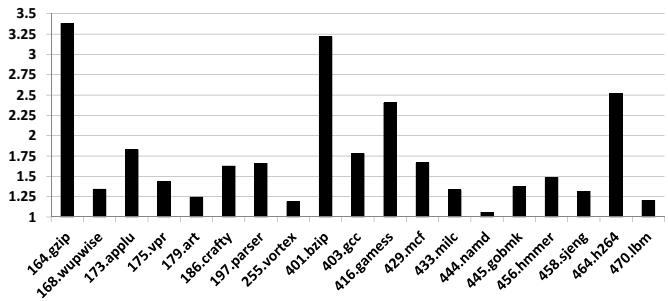
图片类型与论文位置
该图对应论文中的 Figure 3: Speedup upper bound for the studied configurations. An oracle predicts all results.
图中展示的是：在研究配置下，如果存在一个完美的 Value Predictor / Oracle Predictor ，能够预测所有可预测结果时，各个 SPEC benchmark 相对 baseline 的理论加速上界 。
该图不是实际 VTAGE、Stride、FCM 等预测器的结果，而是用于回答一个核心问题：Value Prediction 在这些程序中最多有多大潜力？
坐标轴含义
横轴：19 个 SPEC’00 / SPEC’06 benchmark。
纵轴：相对 baseline 的 Speedup 。
纵轴范围约为 1.0 到 3.5 。
数值越高，说明程序中存在越多可被 Value Prediction 打破的数据依赖，理论收益越大。
数值接近 1，说明即使完美预测所有值，也几乎无法带来性能提升，瓶颈可能主要来自 memory hierarchy、branch prediction、fetch bandwidth、ROB/IQ/LSQ size 等其他因素。
Benchmark
类型
近似 Speedup 上界
观察
164.gzip INT
3.35× 全图最高，Value Prediction 潜力极大
168.wupwise FP
1.35× 有一定潜力，但不突出
173.applu FP
1.85× 较高潜力
175.vpr INT
1.45× 中等潜力
179.art FP
1.25× 潜力较低
186.crafty INT
1.62× 中等偏高
197.parser INT
1.65× 中等偏高
255.vortex INT
1.20× 潜力较低
401.bzip2 INT
3.20× 极高潜力，仅次于 gzip
403.gcc INT
1.78× 较高潜力
416.gamess FP
2.40× 高潜力
429.mcf INT
1.68× 中等偏高
433.milc FP
1.35× 有限潜力
444.namd FP
1.05× 几乎无理论收益
445.gobmk INT
1.38× 中等偏低
456.hmmer INT
1.50× 中等潜力
458.sjeng INT
1.32× 中等偏低
464.h264ref INT
2.52× 高潜力
470.lbm FP
1.22× 潜力较低
总体趋势
大多数 benchmark 的上界大于 1.2× ，说明 Value Prediction 在现代较宽、较深 pipeline 中仍有实际研究价值 。
部分程序的上界超过 2× ，表明其性能强烈受限于数据依赖链，若能准确预测值，可以显著缩短 critical path。
但也存在如 444.namd 这类程序，即使 oracle 完美预测，也几乎没有加速空间，说明其瓶颈不在普通寄存器值依赖上。
高收益 benchmark 分析
164.gzip：约 3.35×
是图中收益最高的程序。
表明 gzip 的执行中存在大量可通过 Value Prediction 打破的 true data dependencies。
如果预测足够准确，理论上可以大幅提升 instruction-level parallelism。
401.bzip2：约 3.20×
与 gzip 类似，同属压缩类整数程序。
高上界说明其压缩/解压核心循环中存在强数据依赖链，但很多值具有可预测性。
464.h264ref：约 2.52×
视频编码类程序，数据处理密集。
上界较高，说明其部分计算路径可能存在重复模式或控制流相关的值模式。
416.gamess：约 2.40×
浮点科学计算程序。
高上界说明即使是 FP benchmark，也可能存在大量可预测或可投机化的数据值。
中等收益 benchmark 分析
173.applu、403.gcc、429.mcf、197.parser、186.crafty、456.hmmer 的理论上界大约在 1.5× 到 1.9× 。这些程序存在一定数据依赖瓶颈，但不如 gzip、bzip2、h264ref 那样极端。
对这些程序而言，实际 Value Predictor 的收益很依赖：
prediction coverage prediction accuracy misprediction recovery cost 是否能预测关键路径上的值
即使 oracle 上界较高，真实预测器若覆盖不到关键指令，也可能只能获得有限 speedup。
低收益 benchmark 分析
444.namd：约 1.05×
几乎没有 Value Prediction 加速空间。
论文后文也指出：某些 benchmark 即使预测覆盖率很高，实际性能也可能提升很小，因为程序本身没有足够的 Value Prediction 可利用潜力。
255.vortex、470.lbm、179.art、458.sjeng、433.milc 的上界大多在 1.2× 到 1.35× 。
这些程序可能主要受限于其他因素，例如 cache miss、memory bandwidth、branch behavior 或 pipeline resource constraints。
对这些程序，复杂 Value Predictor 的硬件成本可能难以被性能收益抵消。
类别
代表程序
观察
INT 高收益 gzip、bzip2、h264ref
整数程序中存在多个极高 Value Prediction 潜力案例
INT 中等收益 gcc、mcf、parser、crafty、hmmer
多数整数程序有稳定但有限的收益空间
FP 高收益 gamess、applu
部分浮点程序也有明显潜力
FP 低收益 namd、lbm、art、milc
多个浮点程序上界较低，说明瓶颈不一定是值依赖
与论文核心论点的关系
该图用于证明：Value Prediction 的理论潜力仍然存在 。
作者首先展示 oracle 上界，说明如果值预测完全准确，很多程序能够显著加速。
随后论文才讨论实际问题：
如何避免 value misprediction 带来的高恢复代价。
如何用 Forward Probabilistic Counters, FPC 将准确率提高到 99.7%+ 。
如何用 VTAGE 解决传统 context-based predictor 在 tight loop 中的 back-to-back prediction 问题。
因此，该图是后续技术方案的动机基础：既然上界很高，就值得设计更实际、更高准确率、更低复杂度的 Value Prediction 机制。
关键技术含义
高 oracle speedup 不等于实际 predictor 一定高收益 。
Oracle 假设所有值都能正确预测。
实际预测器受限于 coverage、accuracy、confidence estimation、table conflict、training latency。
低 oracle speedup 意味着实际收益上限天然有限 。
例如 namd，即使真实预测器覆盖率很高，也很难获得显著加速。
Value Prediction 的收益高度 benchmark-dependent 。
图中 speedup 从约 1.05× 到 3.35× ，跨度很大。
说明不能只看平均值，必须逐程序分析。
与后续实验结果的对应关系
后续 Figure 4、Figure 5、Figure 7 中，实际预测器的 speedup 明显低于该图中的 oracle 上界。
这是合理的，因为实际预测器：
不能预测所有结果。
必须依赖 confidence counters。
会牺牲 coverage 来换取 high accuracy。
还可能遭遇 value misprediction recovery penalty。
例如：
gzip、bzip2、h264ref 在 Figure 3 中上界很高，因此后续实际预测器也更可能取得明显收益。namd 上界接近 1，因此即使预测覆盖率较高，实际 speedup 仍然有限。
核心结论
该图清楚表明：Value Prediction 在部分现代 benchmark 上仍有很高理论潜力 。
最有潜力的程序包括 164.gzip、401.bzip2、464.h264ref、416.gamess 。
但收益分布极不均衡，部分程序如 444.namd 几乎没有可利用空间。
因此，论文提出的 FPC + VTAGE + commit-time validation 的意义在于：用较低复杂度和极高准确率，在有潜力的程序上逼近一部分 oracle 上界，同时避免在低收益程序上造成明显 slowdown。
11e8f6a3e61303507aa27fe1234657b01f6e6658e7cda565808af11a5fdaf124.jpg#
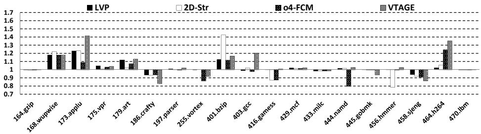
图片类型与出处
该图对应论文中的 Figure 4(a): Baseline counters 。
展示的是在使用 squashing at commit 作为 value misprediction recovery 机制时，不同 Value Predictor 相对 baseline processor 的 speedup 。
图中使用的是普通 3-bit saturating confidence counters ，即论文中所谓的 Baseline counters ，尚未使用 Forward Probabilistic Counters, FPC 。
坐标与图例含义
横轴是 SPEC benchmark，包括 SPEC CPU2000 与 SPEC CPU2006 中的 19 个程序。
纵轴是 Speedup over baseline ：
1.0 表示与无 Value Prediction 的 baseline 性能相同。大于 1.0 表示加速。小于 1.0 表示减速。
图例包含 4 类单一 Value Predictor：
图例
Predictor
类型
含义
黑色实心柱
LVP Context/last-value based
使用上一结果作为预测值
白色柱
2D-Str Computational predictor
2-delta Stride predictor
黑白纹理柱
o4-FCM Context-based predictor
order-4 Finite Context Method
灰色纹理柱
VTAGE Global-history context predictor
基于 global branch history/path history 的 TAGE-like value predictor
核心观察
Baseline counters 下性能波动很大 。虽然很多 predictor 在若干 benchmark 上能获得明显加速，但也存在明显减速。
这说明普通 3-bit confidence counter 的 accuracy 不足以支撑 commit-time validation 。
因为 squashing at commit 的 misprediction penalty 很高，一旦出现少量 value misprediction，就可能抵消正确预测带来的收益。
该图的主要作用是证明：仅靠传统 confidence counter，Value Prediction 在实际 pipeline 中并不稳定 。
现象
说明
部分 benchmark 加速显著 如 173.applu、401.bzip2、403.gcc、464.h264ref
部分 benchmark 减速明显 如 186.crafty、255.vortex、416.gamess、444.namd、458.sjeng
不同 predictor 优势互补 没有单一 predictor 在所有程序上最优
VTAGE 表现较强但不稳定 在 applu、gcc、h264ref 等程序上优势明显，但在 crafty、sjeng 等存在减速
2D-Str 在某些程序上突出 如 wupwise、bzip2，说明 stride pattern 对部分 workload 很有效
Benchmark
LVP
2D-Str
o4-FCM
VTAGE
主要结论
164.gzip ≈1.00
≈1.00
≈1.00
≈1.00
几乎无收益，Value Prediction 潜力低或覆盖不足
168.wupwise ≈1.18
≈1.22
≈1.17
≈1.18
2D-Str 最优 ，存在明显 stride-like value locality
173.applu ≈1.22
≈1.22
≈1.05
≈1.41
VTAGE 显著最优 ，control-flow context 对值预测有效
175.vpr ≈1.03
≈1.02
≈1.02
≈1.04
小幅收益，预测贡献有限
179.art ≈1.10
≈1.05
≈1.12
≈1.12
多种 predictor 均有收益，VTAGE/o4-FCM 较好
186.crafty ≈0.95
≈0.95
≈0.95
≈0.83
明显减速 ，VTAGE 受 misprediction penalty 影响严重
197.parser ≈1.00
≈1.00
≈1.01
≈1.02
收益极小
255.vortex ≈1.00
≈1.00
≈0.87
≈0.98
o4-FCM 明显不佳，可能存在错误上下文匹配或低 accuracy
401.bzip2 ≈1.12
≈1.42
≈1.10
≈1.16
2D-Str 大幅领先 ，stride predictor 很适合该程序
403.gcc ≈1.00
≈1.02
≈1.00
≈1.20
VTAGE 明显最优 ，global control-flow history 有价值
416.gamess ≈0.88
≈1.00
≈0.88
≈1.00
LVP/o4-FCM 减速，2D-Str/VTAGE 基本持平
429.mcf ≈1.01
≈1.00
≈1.00
≈1.02
小幅收益
433.milc ≈0.99
≈1.00
≈0.99
≈1.00
基本无收益
444.namd ≈1.00
≈1.02
≈0.80
≈1.03
o4-FCM 明显减速，VTAGE 小幅收益
445.gobmk ≈1.00
≈1.00
≈1.00
≈0.96
VTAGE 小幅减速
456.hmmer ≈1.00
≈0.80
≈1.00
≈1.03
2D-Str 明显减速，stride assumption 不适合
458.sjeng ≈0.94
≈1.00
≈0.91
≈0.87
多数 predictor 减速，value misprediction 成本高
464.h264ref ≈1.02
≈1.03
≈1.24
≈1.36
VTAGE 最优，o4-FCM 次优 ，context-based predictor 效果好
470.lbm ≈1.00
≈1.00
≈1.00
≈1.00
基本无变化
最显著加速点
173.applu + VTAGE：约 1.4×
说明该程序中存在较强的 control-flow-correlated value locality 。
VTAGE 利用 global branch history 捕获了传统 local predictor 难以捕获的模式。
401.bzip2 + 2D-Str：约 1.42×
说明 bzip2 中有大量符合 2-delta stride 的值序列。
Computational predictor 在这种规则数值变化场景下优势明显。
464.h264ref + VTAGE：约 1.35×
说明 h264ref 中 value pattern 与控制流上下文高度相关。
o4-FCM 也有明显收益，但低于 VTAGE。
最明显减速点
186.crafty + VTAGE：约 0.83×
这是图中最严重的减速之一。
说明在普通 3-bit counter 下，VTAGE 对 crafty 的错误预测仍然过多。
在 commit-time squashing 下，每次 misprediction 的恢复代价很大，导致性能严重下降。
444.namd + o4-FCM：约 0.80×
o4-FCM 虽然可能有较高 coverage，但 confidence 不足时会引入高代价错误预测。
这也体现出 coverage 高不等于 performance 高 。
456.hmmer + 2D-Str：约 0.80×
说明该程序中的值变化不适合 2D-stride 模型。
Stride predictor 在错误模式下可能产生稳定但错误的高置信预测。
458.sjeng + VTAGE/o4-FCM/LVP：均有减速
表明该程序对 Value Prediction 不友好，或者普通 confidence counter 无法有效过滤低质量预测。
Predictor
优势
劣势
图中表现
LVP 硬件简单，预测延迟低
只能捕获 last-value locality
整体较保守，少数 benchmark 有收益，也有轻微减速
2D-Str 擅长规则数值递增/递减模式
对非 stride pattern 容易误判
在 bzip2、wupwise 表现突出，但 hmmer 明显减速
o4-FCM 可捕获 local value history pattern
两级访问复杂，学习慢，back-to-back prediction 难实现
h264ref 有收益，但 namd、vortex、sjeng 减速明显
VTAGE 利用 global branch history，适合 control-flow dependent values
baseline counter 下仍可能误预测
applu、gcc、h264ref 表现突出，但 crafty、sjeng 减速
为什么 baseline counters 会导致减速
普通 3-bit confidence counter 的机制是：
正确预测时 counter 增加。
错误预测时 counter reset。
counter 饱和时才使用预测。
但问题在于：
对 commit-time validation 来说，99% accuracy 可能仍然不够 。
每次 value misprediction 可能导致大量后续指令被 squash。
正确预测单次收益通常较小，而错误预测单次代价很大。
因此，即使 predictor 的平均 accuracy 看似较高，也可能出现：
小量错误预测 × 高恢复代价 > 大量正确预测 × 小收益 。
与论文论点的关系
该图支撑论文的第一个核心论点：
传统 confidence estimation 不足以让 Value Prediction 在实际高代价恢复机制下稳定获益 。
它为后续 Figure 4(b) 引入 FPC 做铺垫。
论文随后表明：
使用 Forward Probabilistic Counters 后，accuracy 可提升到 >99.7% 。
虽然 coverage 会下降，但整体 performance 更稳定。
commit-time squashing 也能接近 ideal selective reissue 的效果。
关于 VTAGE 的解读
图中 VTAGE 不是在所有 benchmark 上都最优，但它在几个关键程序上表现非常强：
173.applu 403.gcc 464.h264ref
这说明：
用 global branch history 预测数据值是有效方向。
很多值并不只依赖局部 value history，也可能依赖控制流路径。
但 baseline counter 下，VTAGE 仍会在一些程序中出现明显减速：
因此 VTAGE 的实用性需要和 FPC confidence filtering 结合。
关于 o4-FCM 的解读
o4-FCM 在图中表现并不稳定。
虽然它是经典 context-based value predictor，但存在两个问题：
硬件实现复杂 ：需要维护 local value history，并进行二级表访问。预测 back-to-back occurrences 困难 ： tight loop 中连续出现同一指令时，critical path 很长。
图中它相对 VTAGE 没有明显性能优势，甚至在多个程序中更差。
这支持论文观点：
VTAGE 是比 o4-FCM 更实际的 context-based predictor 。
关于 2D-Str 的解读
2D-Str 在某些程序上非常强，例如：
这说明 computational predictor 与 context-based predictor 捕获的是不同类型的 value locality。
但它也会在不适合 stride pattern 的程序中严重减速，例如：
因此论文后续提出 hybrid：
这种组合可以互补：
VTAGE 捕获 control-flow-correlated values。
2D-Str 捕获 arithmetic/stride patterns。
该图的关键结论
单一 predictor 没有绝对优势 。普通 3-bit confidence counter 不足以保障实际性能 。commit-time validation 对 accuracy 极其敏感 。VTAGE 在部分程序上潜力很大，但必须配合更强 confidence mechanism 。2D-Str 与 VTAGE 具有互补性，适合构成 hybrid predictor 。o4-FCM 的收益不足以抵消其复杂硬件实现问题 。
一句话总结
该图说明：在 squashing at commit 这种高代价恢复机制下，传统 baseline confidence counter 会让 Value Prediction 表现不稳定；虽然 VTAGE 和 2D-Str 在部分 benchmark 上有显著潜力，但必须引入 FPC 这类更严格的 confidence estimation 才能使 Value Prediction 变得 practical。
c441c19313d3895aad8a4021ca8cfc130c2ef4b55b3fe44ca37f631e75790cb1.jpg#
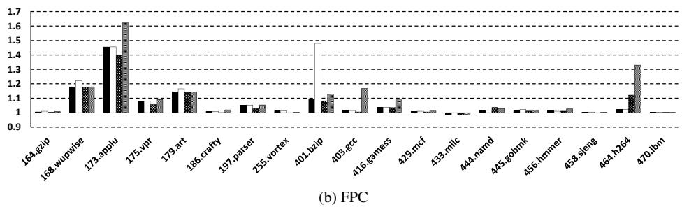
图片类型 ：该图是论文 Figure 4 的子图 “(b) FPC” ，展示在采用 Forward Probabilistic Counters, FPC 置信机制后，不同 Value Predictor 在 squashing at commit 恢复机制下相对 baseline processor 的 speedup 。
坐标含义 ：
横轴 ：SPEC’00 / SPEC’06 benchmark，包括 integer 与 floating-point 程序。纵轴 ：相对 baseline 的性能加速比，范围约为 0.9 到 1.7 。水平虚线 ：以 0.1 为间隔的 speedup 参考线。1.0 水平线 ：表示与 baseline 性能相同。柱状组 ：每个 benchmark 下有多根柱，代表不同 Value Prediction 方案，结合论文上下文应对应：
LVP 2D-Stride o4-FCM VTAGE
核心结论 ：
FPC 显著抑制了错误预测带来的性能损失 。大多数 benchmark 的 speedup 都在 1.0 以上或接近 1.0 ，说明使用 FPC 后，即使采用代价较高的 commit-time validation + pipeline squashing ，Value Prediction 仍基本不会造成明显 slowdown。
性能提升高度依赖 benchmark，少数程序获得显著收益，多数程序收益较小。
性能区间
benchmark 表现
解释
高收益，>1.3× 173.applu , 464.h264 , 部分 401.bzip2 数据依赖链较长，Value Prediction 能有效缩短关键路径
中等收益，1.1×–1.3× 168.wupwise , 179.art , 403.gcc , 416.gamess 部分预测器能捕获稳定值模式或控制流相关模式
轻微收益，1.0×–1.1× 175.vpr , 197.parser , 444.namd , 456.hmmer 等可预测值存在，但对关键路径贡献有限
几乎无收益，≈1.0× 164.gzip , 186.crafty , 255.vortex , 429.mcf , 433.milc , 445.gobmk , 458.sjeng , 470.lbm 预测覆盖率低、预测结果不在关键路径上，或程序瓶颈不在数据依赖
Benchmark
视觉观察
分析
173.applu 最高柱约 1.6×+
是图中最明显的受益者之一，说明该程序存在大量可被 Value Prediction 打破的 true data dependencies
464.h264 最高柱约 1.3×+
VTAGE 或混合效果可能较好，说明控制流相关值或重复值模式较明显
401.bzip2 某一预测器柱接近 1.5× ，但其他柱较低
说明不同预测器之间差异很大，特定值模式更适合某类 predictor
168.wupwise 多个柱约 1.15×–1.22×
多种预测器都能稳定带来收益，可能存在较规则的数值模式
403.gcc 某些柱约 1.15×
VTAGE 类基于 global branch history 的方法可能更有效
433.milc 柱略低于或接近 1.0×
即使有 FPC，仍可能出现极小 slowdown，但幅度很小
470.lbm 基本为 1.0×
Value Prediction 对该 slice 几乎无帮助，可能主要受内存带宽或规则 streaming 行为限制
预测器间差异 ：
2D-Stride 在某些程序上表现突出，例如 168.wupwise 、可能的 401.bzip2 ，说明这些程序存在明显的 stride-like value pattern。VTAGE 在 173.applu、403.gcc、464.h264 等程序上表现较强，符合论文观点：VTAGE 能利用 global branch history 捕获控制流相关值模式 。o4-FCM 整体并未明显压倒 VTAGE，且论文指出其实际硬件实现还存在 back-to-back prediction 的关键路径问题，因此图中的 o4-FCM 性能可能偏乐观。LVP 通常作为简单 baseline predictor，在部分程序有效，但整体能力有限。
FPC 的作用体现 ：
与论文中 Figure 4(a) 的 baseline counters 相比，Figure 4(b) 显示：
slowdown 基本消失 ；speedup 更稳定；
predictor 不再因为少量 misprediction 在 commit-time squash 下被严重惩罚。
这说明 FPC 牺牲部分 coverage，换取极高 accuracy，是本文的重要设计点。
论文正文指出，FPC 后 accuracy 通常达到 >0.997 ，因此即使单次 misprediction penalty 很高，也不会频繁触发恢复。
与恢复机制的关系 ：
图中使用的是 squashing at commit ，这是较简单但惩罚较高的恢复机制。
图中仍能获得正收益，说明：
高 accuracy 比复杂 selective reissue 更关键 ；如果 prediction confidence 足够严格，复杂的 out-of-order selective reissue 机制收益有限；
Value Prediction 可以主要限制在 in-order front-end prediction 与 in-order back-end validation/training ，减少对 OoO engine 的侵入。
关键现象总结 ：
FPC 后，Value Prediction 的风险显著降低 。性能提升并不均匀 ，高度依赖程序的数据值局部性、控制流相关性和关键路径结构。VTAGE 是实用性更强的 context-based predictor ，因为它利用 branch history，不依赖 local value history，因此更容易支持 tight loop 中的 back-to-back prediction。最高收益接近 65% ，出现在 173.applu 附近，与论文摘要中“up to 65% speedup”的说法一致。多数 benchmark 的收益小于 5%–10% ，说明 Value Prediction 并非普适大幅加速技术，但对特定应用非常有效。
一句话概括 ：
该图证明：在 FPC 高置信机制保护下，即使采用简单的 commit-time squash 恢复策略，Value Prediction 仍能在多数程序中避免性能损失，并在 applu、h264、bzip2 等程序上获得显著加速。
9ba1436d1438e648e91e9c7755824c1c562f13c938d64f64279ffd6f03dd87d5.jpg#
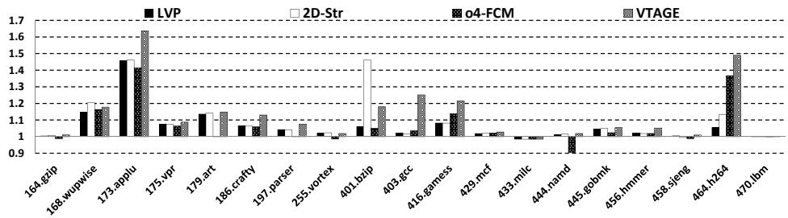
图片类型与上下文
该图是论文中用于展示 不同 Value Predictor 在使用 FPC confidence counters 后的性能表现 的柱状图。
对应实验场景是：value misprediction recovery 采用 squashing at commit 。
纵轴是 Speedup over baseline ，即相对于不使用 Value Prediction 的基线处理器的加速比。
横轴是 SPEC CPU2000 / CPU2006 的 19 个 benchmark。
图例包含 4 种预测器：
LVP ：Last Value Predictor2D-Str ：2-delta Stride Predictoro4-FCM ：order-4 Finite Context Method PredictorVTAGE ：Value TAGE Predictor
元素
含义
Y 轴范围 约 0.9 到 1.7
Y=1.0 实线 与 baseline 性能相同
高于 1.0 Value Prediction 带来性能提升
低于 1.0 Value Prediction 造成性能下降
虚线网格 约每 0.1 speedup 一个刻度
每组 4 根柱 同一 benchmark 下 4 种 predictor 的 speedup 对比
总体结论
绝大多数 benchmark 的 speedup ≥ 1.0 ，说明在使用 FPC 后，commit-time squashing 的高误预测代价基本被高准确率抵消。VTAGE 在多个 benchmark 上表现突出 ，尤其是 173.applu、403.gcc、416.gamess、464.h264ref 。2D-Str 在 401.bzip2 上表现极强 ，明显超过其他 predictor。单一 predictor 没有在所有 workload 上占优 ，这也是论文后续提出 hybrid predictor 的动机。多数 benchmark 的提升较小，约 0%–10% ；少数 benchmark 有显著提升，最高接近 1.65× 。
Benchmark
LVP
2D-Str
o4-FCM
VTAGE
主要观察
164.gzip ~1.00
~1.00
~1.01
~1.01
几乎无提升
168.wupwise ~1.15
~1.22
~1.17
~1.17
2D-Str 最好
173.applu ~1.45
~1.46
~1.43
~1.64
VTAGE 显著领先
175.vpr ~1.06
~1.06
~1.06
~1.08
小幅提升
179.art ~1.13
~1.14
~1.08
~1.14
LVP / 2D-Str / VTAGE 接近
186.crafty ~1.05
~1.05
~1.04
~1.12
VTAGE 最好
197.parser ~1.00
~1.03
~1.00
~1.07
VTAGE 最好
255.vortex ~1.01
~0.99
~1.00
~1.02
基本无收益
401.bzip2 ~1.04
~1.46
~1.05
~1.18
2D-Str 大幅领先
403.gcc ~1.01
~1.01
~1.02
~1.25
VTAGE 明显领先
416.gamess ~1.07
~1.11
~1.14
~1.21
VTAGE 最好
429.mcf ~1.01
~1.01
~1.01
~1.02
几乎无提升
433.milc ~0.99
~0.99
~0.99
~0.99
轻微 slowdown
444.namd ~1.00
~1.01
~1.00
~1.02
极小提升
445.gobmk ~1.00
~1.00
~1.04
~1.04
o4-FCM / VTAGE 略优
456.hmmer ~1.01
~1.01
~1.03
~1.05
VTAGE 略优
458.sjeng ~1.00
~1.00
~1.00
~1.01
几乎无提升
464.h264ref ~1.07
~1.14
~1.36
~1.49
VTAGE 最好，o4-FCM 次之
470.lbm ~1.00
~1.00
~1.00
~1.00
无明显收益
排名
Benchmark
最佳 predictor
近似最高 speedup
解释
1
173.applu VTAGE ~1.64× 控制流相关 value pattern 明显，VTAGE 能利用 global branch history
2
464.h264ref VTAGE ~1.49× 存在可预测且关键路径相关的数据值
3
401.bzip2 2D-Str ~1.46× stride-like value locality 很强
4
403.gcc VTAGE ~1.25× VTAGE 捕获控制流上下文相关值
5
416.gamess VTAGE ~1.21× VTAGE 优于传统 context-based predictor
Predictor
图中表现
技术原因
LVP 多数 benchmark 小幅提升，少数如 applu 有明显收益
只预测 last value，结构简单，但表达能力有限
2D-Str 在 wupwise、bzip2 表现突出
对稳定 stride / delta pattern 敏感
o4-FCM 在 h264ref 表现较好，但整体不稳定
利用 local value history，但学习慢、覆盖率受限
VTAGE 多数重要提升点上最强
利用 global branch history + path history ，更适合控制流相关 value pattern
VTAGE 的关键优势
在 173.applu 上接近 1.65× speedup ，是全图最高。在 403.gcc、416.gamess、464.h264ref 上明显优于 LVP、2D-Str 和 o4-FCM 。相比 o4-FCM ，VTAGE 不依赖最近若干次本地 value history，因此更容易支持 back-to-back prediction 。
VTAGE 的预测访问可以跨多个 pipeline cycle 完成，更适合实际硬件实现。
图中结果支持论文观点：VTAGE 是比 FCM 更实用的 context-based value predictor 。
2D-Str 的关键优势
401.bzip2 是最典型案例 ：
2D-Str 约 1.46×
VTAGE 约 1.18×
LVP / o4-FCM 仅约 1.04–1.05×
说明某些程序存在强烈的 stride-based value locality 。
这也说明 VTAGE 与 Stride predictor 具有互补性 ，单独使用 VTAGE 并不能覆盖所有可预测模式。
o4-FCM 的表现解读
o4-FCM 在 464.h264ref 上达到约 1.36× ，说明 local value history 在部分 workload 中有效。
但在多数 benchmark 上，o4-FCM 与 LVP 接近，甚至不如 VTAGE。
原因包括：
local value history 需要更长学习时间 confidence gating 后 coverage 下降
两级查表结构对 back-to-back occurrence 不友好
实际硬件中 o4-FCM 延迟可能更难满足
Benchmark
现象
可能原因
164.gzip 几乎无提升
可预测值少，或预测值不在关键路径
429.mcf 几乎无提升
性能可能主要受 memory latency 限制
433.milc 轻微 slowdown
即使 FPC 降低误预测，收益仍不足以抵消开销
458.sjeng 几乎无提升
value prediction 覆盖或关键性不足
470.lbm 无明显收益
baseline 已受其他瓶颈限制，VP 难发挥
与 FPC 的关系
该图体现的是使用 FPC / Forward Probabilistic Counters 后的结果。
FPC 的作用是：
只在 confidence counter 饱和时使用预测 正确预测时以概率方式递增 counter
误预测时 reset counter
效果是：
大幅降低 value misprediction rate
牺牲部分 coverage
使得 commit-time validation 成为可行方案
图中几乎没有严重 slowdown，说明 高准确率比高覆盖率更关键 。
与 commit-time squashing 的关系
commit-time squashing 的误预测代价很高，通常比 execution-time recovery 更昂贵。
如果 predictor 准确率不够，少量误预测即可抵消正确预测收益。
图中结果说明：
使用 FPC 后，误预测数量被压低；
即使采用简单但代价较高的 squashing at commit ，仍可获得明显 speedup；
因而无需复杂的 selective reissue 机制也能实现实用 Value Prediction。
图中最重要的信息
VTAGE 是整体最有竞争力的单一 predictor 。2D-Str 在 stride-dominant workload 上不可替代 。o4-FCM 没有显示出足够优势来证明其复杂实现成本合理 。FPC 使得所有 predictor 的性能更稳定 ，避免了传统 Value Prediction 中误预测代价过高的问题。不同 predictor 的优势 workload 不同，因此 hybrid predictor 是自然方向 。
图中证据
支撑的论文观点
多数柱子高于 1.0
Value Prediction 在现代 aggressive OoO pipeline 中仍有潜力
VTAGE 多次领先
global branch history 可有效用于 value prediction
2D-Str 在 bzip2 极强
computational predictor 与 context-based predictor 互补
几乎无严重 slowdown
FPC 能将误预测风险控制在可接受范围
o4-FCM 整体不占优
local value history predictor 的复杂性未必值得
最终解读
这张图的核心结论是：在 FPC 提供超高置信度过滤后，Value Prediction 即使采用简单的 commit-time squashing recovery，也可以在多个 benchmark 上带来实际性能收益。
VTAGE 是最值得关注的 predictor ，因为它在性能和硬件可实现性之间取得较好平衡。但 VTAGE 并不能完全替代 2D-Str ，二者覆盖的 value locality 类型不同。
因此，图中结果直接引出了论文后续的结论：VTAGE + 2D-Stride hybrid predictor 是更实用、更高收益的设计方向。
d4e2ccb58f5a3a0b746cca93161e0c218bb3efac4725bc900dca399c0fc8b514.jpg#
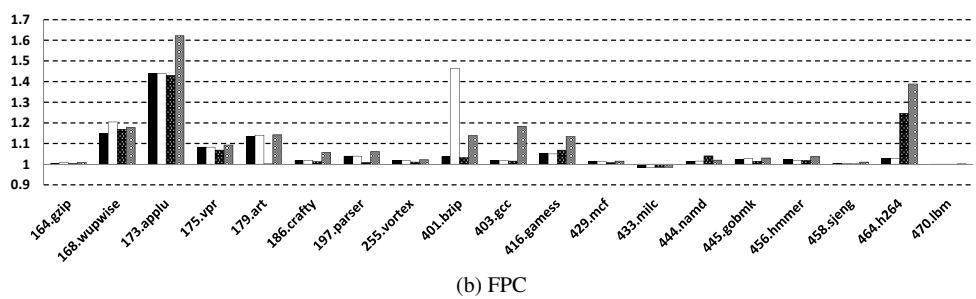
图像类型与来源
该图是论文 Figure 4 的子图 “(b) FPC” 。
展示内容为：在使用 Forward Probabilistic Counters, FPC 作为置信度机制，并采用 squashing at commit 作为 value misprediction 恢复机制时，不同 Value Predictor 在 SPEC 基准上的 Speedup over baseline 。
纵轴为 Speedup ，横轴为 19 个 SPEC’00 / SPEC’06 benchmark。
横向实线 1.0 表示无加速基线；高于 1.0 表示性能提升，低于 1.0 表示性能下降。
图中比较的预测器
每个 benchmark 通常包含 4 根柱，对应论文中 Figure 4 的几类单一预测器：
预测器
英文名称
类型
主要特征
LVP Last Value Predictor
context/simple
预测上一次出现的值
2D-Stride 2-delta Stride Predictor
computational
捕获 stride / delta 模式
o4-FCM order-4 Finite Context Method
context-based
基于局部 value history
VTAGE Value TAgged GEometric Predictor
context-based/global history
利用 global branch history 与 path history
核心结论
FPC 显著抑制了误预测带来的性能损失 。与普通 3-bit confidence counter 相比，FPC 将预测使用条件变得更严格，使整体准确率提升到论文所述的 > 99.7% 量级。
因为误预测极少，即便采用代价较高的 commit-time squashing ，大多数 benchmark 仍能获得正收益或基本不亏损。
图中几乎没有明显低于 1.0 的柱，说明 FPC 使 Value Prediction 在保守恢复机制下变得实用 。
区间
代表 benchmark
观察
高收益，约 1.3×–1.65× 173.applu , 401.bzip2 , 464.h264ref Value Prediction 效果显著
中等收益，约 1.1×–1.25× 168.wupwise , 403.gcc , 416.gamess 部分预测器明显有效
小收益，约 1.02×–1.10× 175.vpr , 179.art , 197.parser , 456.hmmer 有一定收益但不突出
接近无收益，约 1.0× 164.gzip , 429.mcf , 433.milc , 458.sjeng , 470.lbm 可预测值对性能关键路径贡献有限
轻微负收益或接近持平 433.milc 等FPC 后负面影响很小
Benchmark
图中表现
可能原因
173.applu 最高约 1.6×+
存在大量可预测且位于关键路径上的数据值
401.bzip2 个别预测器约 1.45×
某些值模式非常适合特定预测器，尤其可能受益于 stride 或 context
464.h264ref 最高约 1.4×
控制流相关或重复性数据模式明显，VTAGE/其他 predictor 可有效捕获
168.wupwise 约 1.15×–1.2×
数值计算中存在较稳定 value locality
403.gcc 最高约 1.18×
控制流复杂，VTAGE 类预测可能有优势
416.gamess 约 1.1×+
部分浮点计算数据值具有可预测性
不同预测器的表现差异
不存在单一预测器在所有 benchmark 上绝对最优 。2D-Stride 在具有规则数值变化的程序中较强，例如部分科学计算或压缩类 workload。VTAGE 在与控制流相关的数据值预测上更有优势，例如 gcc、gamess、h264ref 一类复杂控制流程序。o4-FCM 在图中整体并不总是突出，说明局部 value history 虽然理论上强，但：
学习模式较慢；
对 tight loop 的 back-to-back prediction 实现复杂；
覆盖率可能受置信度机制影响较大。
LVP 在部分程序中可以带来小幅收益，但表达能力有限。
FPC 的作用解读
FPC 的核心目标不是最大化 coverage，而是最大化 accuracy 。
图中性能提升说明：在 commit-time validation 下，减少误预测比盲目提高预测覆盖率更重要。
FPC 通过概率方式缓慢提升 confidence counter，只有长期稳定正确的预测才会被使用。
其效果可以概括为：
机制
影响
降低误预测数量 减少昂贵的 pipeline squash
牺牲部分 coverage 一些不够稳定的预测不再使用
提高整体 accuracy 使 commit-time recovery 可接受
简化硬件恢复机制 不再强依赖复杂 selective reissue
与论文论点的关系
该图直接支撑论文第一个核心主张：
只要 confidence estimation 足够强，Value Prediction 可以不依赖复杂 selective reissue。
即使采用较保守的 squashing at commit ，由于 FPC 将误预测率压低，大多数程序仍能获得性能收益。
这说明 Value Prediction 的实用性瓶颈并不只是 predictor 本身，而是 confidence control + recovery cost 的平衡。
为什么部分 benchmark 提升很小
图中如 164.gzip、429.mcf、433.milc、458.sjeng、470.lbm 基本接近 1.0。
可能原因包括：
可预测值不在关键路径上；
程序瓶颈主要来自 memory latency、branch misprediction 或 cache behavior；
FPC 过于保守导致 coverage 降低；
数据值本身缺乏稳定模式；
即便预测正确，也无法显著缩短依赖链。
重要观察：高 coverage 不等于高 speedup
论文中指出，例如 namd 可能有较高 coverage，但 speedup 很小。
图中也体现出类似现象：有些 benchmark 柱子接近 1.0，并不代表预测器完全无法预测，而是预测到的值对整体 IPC 改善有限。
因此 Value Prediction 的收益取决于：
预测准确率 accuracy 预测覆盖率 coverage 被预测指令是否在 critical path 误预测恢复成本 基线处理器是否已有足够乱序能力隐藏延迟
对 VTAGE 的图像层面解读
VTAGE 在多个 benchmark 上表现稳定，特别是在控制流相关性明显的场景中较强。
与 o4-FCM 相比，VTAGE 的优势不仅是性能，还包括实现可行性：
不依赖 local value history；
不需要追踪同一指令最近 n 次 speculative value；
可以自然支持 back-to-back occurrences ；
预测访问可从 Fetch 到 Dispatch 跨多个周期完成。
因此图中 VTAGE 的收益具有更强的实际工程意义。
图像传达的最终结论
FPC + Value Prediction 在大多数 benchmark 上可以避免性能倒退。commit-time squashing 虽然恢复代价高，但在 FPC 的高准确率保护下仍然可用。VTAGE 是比传统 local-history context predictor 更实用的方向。单一 predictor 的收益有限且 workload-dependent，因此论文后续提出 hybrid predictor 是自然选择。
该图是论文证明“实用 Value Prediction 可以重新被考虑用于未来高端处理器”的关键实验依据之一。
2e3e4dfe6424f186841c0b717973baac2d7885514b649795b888f18f126a6e2b.jpg#
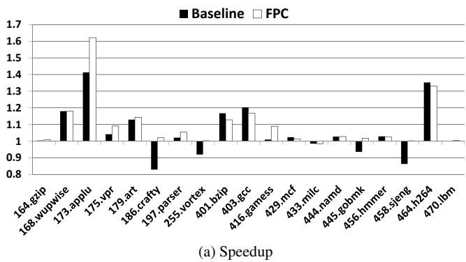
图片类型与上下文
该图是论文 Figure 6 的子图 (a) Speedup 。
横轴为 SPEC’00 / SPEC’06 benchmark，纵轴为相对 baseline processor 的 Speedup 。
图中比较的是 VTAGE value predictor 在两种 confidence counter 机制下的性能：
Baseline ：普通 3-bit saturating confidence counter。FPC ：Forward Probabilistic Counters。
恢复机制为 squashing at commit ，即 value misprediction 在提交阶段验证并通过流水线清空恢复。
纵轴范围约为 0.8 到 1.7 ：
Speedup > 1 表示加速。Speedup = 1 表示基本无变化。Speedup < 1 表示性能下降。
图例
含义
视觉表示
Baseline 普通 confidence counter
黑色柱
FPC Forward Probabilistic Counters
白色柱
整体结论
FPC 整体优于 Baseline counter 。Baseline counter 在部分 benchmark 上出现明显 slowdown ，说明普通 3-bit confidence counter 的准确率不足以支撑高代价的 commit-time recovery。FPC 显著降低 misprediction 带来的性能损失 ，多数 benchmark 上保持不低于 1 的 speedup。图中最突出的收益来自：
173.applu 464.h264ref 168.wupwise 179.art
FPC 的核心价值不是单纯提高 coverage，而是通过牺牲部分 coverage 换取 极高 accuracy ，从而让 squashing at commit 这种简单但高惩罚的恢复机制变得可行。
Benchmark
Baseline VTAGE 近似 Speedup
FPC VTAGE 近似 Speedup
主要观察
164.gzip ≈ 1.00
≈ 1.00
基本无收益，VP 对该片段帮助有限
168.wupwise ≈ 1.18
≈ 1.18
两者相近，均有稳定收益
173.applu ≈ 1.41
≈ 1.62
FPC 显著提升，图中最高加速
175.vpr ≈ 1.03
≈ 1.09
FPC 优于 Baseline，收益中等
179.art ≈ 1.12
≈ 1.14
两者均有收益，FPC 略高
186.crafty ≈ 0.83
≈ 1.02
Baseline 明显 slowdown，FPC 修复性能损失
197.parser ≈ 1.02
≈ 1.05
FPC 小幅更好
255.vortex ≈ 0.95
≈ 1.00
Baseline 负收益，FPC 接近持平
401.bzip2 ≈ 1.16
≈ 1.13
Baseline 略高，FPC 因降低 coverage 略损
403.gcc ≈ 1.20
≈ 1.16
Baseline 略高，但 FPC 仍有明显收益
416.gamess ≈ 1.01
≈ 1.09
FPC 明显优于 Baseline
429.mcf ≈ 1.02
≈ 1.01
基本持平
433.milc ≈ 0.99
≈ 0.99
FPC 仍有极轻微 slowdown
444.namd ≈ 1.02
≈ 1.03
小幅收益
445.gobmk ≈ 0.96
≈ 1.00
FPC 消除 Baseline slowdown
456.hmmer ≈ 1.02
≈ 1.02
基本一致，小幅收益
458.sjeng ≈ 0.87
≈ 1.00
Baseline 明显 slowdown，FPC 恢复到持平附近
464.h264ref ≈ 1.35
≈ 1.33
两者均有大幅收益，Baseline 略高
470.lbm ≈ 1.00
≈ 1.00
基本无变化
最显著加速案例
173.applu
Baseline 约 1.41× 。
FPC 约 1.62× 。
说明该 benchmark 中存在大量可被 VTAGE 捕获的 value locality / control-flow-correlated value pattern。
FPC 在此不仅避免误预测损失，还保留了足够 coverage，因此收益最大。
464.h264ref
Baseline 和 FPC 都约 1.33×–1.35× 。
说明该 benchmark 对 value prediction 高度敏感，即使 FPC 稍微降低 coverage，仍保持强收益。
168.wupwise
两者均约 1.18× 。
FPC 没有明显额外收益，表明 Baseline counter 在该程序上已经较可靠。
403.gcc / 401.bzip2
均有约 13%–20% 的加速。
Baseline 略高于 FPC，反映 FPC 的保守策略可能损失部分有用预测。
Benchmark
Baseline 问题
FPC 效果
186.crafty Speedup 降至约 0.83 ，严重 slowdown
恢复到约 1.02
255.vortex Speedup 约 0.95
接近 1.00
445.gobmk Speedup 约 0.96
接近 1.00
458.sjeng Speedup 约 0.87 ，明显 slowdown
恢复到约 1.00
对 slowdown 的解释
在 squashing at commit 机制下，value misprediction 的代价很高。
普通 Baseline counter 即使有较高 accuracy，例如 94%–99%，仍可能不足。
当 misprediction 发生时：
错误值可能已经影响大量后续指令。
到 commit 才发现错误。
需要清空大量流水线状态。
recovery penalty 可能达到几十个 cycle。
因此，少量 misprediction 就可能抵消大量正确预测带来的收益 。
FPC 通过更难达到 saturated confidence 状态，使 predictor 只在极高置信度时才使用预测。
结果是：
coverage 降低 。accuracy 大幅提高 。总体性能更稳定。
FPC 与 Baseline 的核心差异
Baseline counter：
正确预测后较快增加 confidence。
容易较早进入 saturated 状态。
coverage 较高。
但 misprediction 更多。
FPC：
正确预测后以概率方式前进。
confidence 增长更慢。
只有长期稳定正确的 value pattern 才会被使用。
coverage 较低。
但 accuracy 极高。
图中体现为：
FPC 在多数 benchmark 上避免低于 1。
Baseline 在若干 benchmark 上出现严重负收益。
为什么部分 benchmark 中 Baseline 反而略高
例如 401.bzip2、403.gcc、464.h264ref ：
Baseline 的 speedup 略高于 FPC。
原因可能是这些程序中 VTAGE 的预测本身已经较准确。
FPC 进一步提高 accuracy 的边际收益不大。
但 FPC 会减少 coverage，因此少了一部分本可带来收益的预测。
这说明 FPC 是一种 稳健性优先 的设计，而不是在所有场景下最大化 speedup。
与论文论点的对应关系
该图直接支撑论文的第一个核心论点：
高 accuracy 比高 coverage 更重要 。
尤其在 commit-time validation 场景中：
recovery 简单。
硬件复杂度低。
但 misprediction penalty 高。
因此必须把 misprediction 数量压到极低。
FPC 的作用正是让 VTAGE 在这种高惩罚恢复机制下仍然实用。
对 VTAGE 的含义
图中只分析 VTAGE ，没有展示 Stride、LVP 或 FCM。
VTAGE 依赖：
global branch history path history TAGE-like tagged components
它适合预测与控制流相关的值。
图中 applu、h264ref、gcc 等 benchmark 的高收益说明：
某些程序中，value 与控制流历史存在强相关性。
VTAGE 能够利用这种相关性突破传统 local value history predictor 的限制。
图中最重要的信息
FPC 几乎消除了 VTAGE 在 Baseline counter 下的严重负收益。 FPC 让 commit-time squashing 成为可接受的 recovery 方案。 VTAGE + FPC 在部分 benchmark 上可获得显著 speedup，最高约 1.6×。 性能收益高度依赖 benchmark，本图中并非所有程序都能从 value prediction 中受益。
简要总结
该图表明，单纯使用普通 confidence counter 的 VTAGE 并不稳定，可能在 crafty、sjeng、vortex、gobmk 等 benchmark 上造成 slowdown。
引入 Forward Probabilistic Counters 后，VTAGE 的性能明显更稳健。
FPC 的主要贡献是通过极高 confidence 门槛减少 value misprediction，使得高惩罚的 squashing at commit recovery 也能获得实际性能收益。
因而，该图是论文证明 practical value prediction 可行性的关键证据之一。
2a95ecee42131dbac513cdff98d0b4a6f4272f65fa58de2bf75a466dbc14b345.jpg#
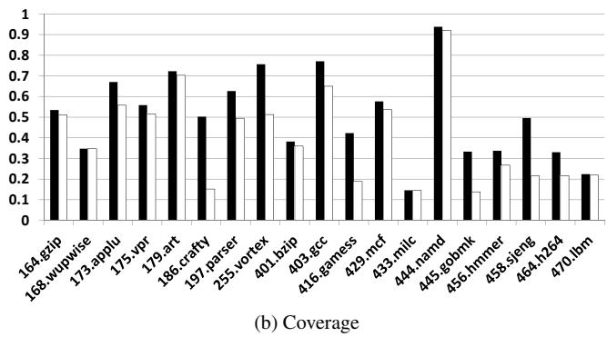
图像类型与上下文
该图是论文 Figure 7 的子图 “(b) Coverage” 。
横轴为 SPEC CPU2000 / CPU2006 benchmarks 。
纵轴为 Prediction Coverage ，范围 0–1 ，表示在启用高置信度机制后，Value Predictor 实际能够给出并使用预测的比例。
每个 benchmark 有两根柱：
黑色柱 ：通常对应 VTAGE + 2D-Stride hybrid with FPC 。白色柱 ：通常对应对比 hybrid，例如 o4-FCM + 2D-Stride with FPC 。
图中核心关注点是：不同 hybrid value predictors 在 FPC 高置信度过滤后还能保留多少预测覆盖率 。
Benchmark
黑色柱 Coverage
白色柱 Coverage
主要观察
164.gzip
≈0.53
≈0.51
两者接近，覆盖率中等
168.wupwise
≈0.34
≈0.34
两者几乎相同，覆盖率偏低
173.applu
≈0.67
≈0.56
黑色柱明显更高
175.vpr
≈0.56
≈0.51
黑色柱略高
179.art
≈0.72
≈0.70
两者都高，差距很小
186.crafty
≈0.50
≈0.15
黑色柱显著优势
197.parser
≈0.62
≈0.49
黑色柱优势明显
255.vortex
≈0.76
≈0.51
黑色柱显著更高
401.bzip
≈0.38
≈0.36
两者接近，覆盖率较低
403.gcc
≈0.77
≈0.65
黑色柱较高
416.gamess
≈0.42
≈0.19
黑色柱明显更高
429.mcf
≈0.58
≈0.53
黑色柱略高
433.milc
≈0.15
≈0.15
两者都很低
444.namd
≈0.94
≈0.92
全图最高覆盖率
445.gobmk
≈0.33
≈0.14
黑色柱显著优势
456.hmmer
≈0.33
≈0.27
黑色柱略高
458.sjeng
≈0.49
≈0.30
黑色柱明显更高
464.h264
≈0.33
≈0.22
黑色柱较高
470.lbm
≈0.22
≈0.22
两者接近，覆盖率低
总体趋势
黑色柱在绝大多数 benchmark 上高于白色柱 。这说明 VTAGE + 2D-Stride hybrid 在 FPC 过滤后通常能保留更高的 prediction coverage。
白色柱在部分程序中覆盖率明显下降，尤其是：
186.crafty 416.gamess 445.gobmk 458.sjeng
这些程序可能对 o4-FCM 这类 local value history predictor 不够友好，或者其 value pattern 学习速度较慢、置信度难以饱和。
最高覆盖率程序
444.namd 覆盖率最高：说明该 benchmark 中大量值具有高度稳定性或可预测性。
但根据论文正文，高 coverage 不一定带来高 speedup ，因为程序本身可能没有足够的 data-dependence critical path 可被 Value Prediction 缩短。
较高覆盖率程序
覆盖率较高的 benchmark 包括：
179.art ：约 0.70+403.gcc ：黑色柱约 0.77255.vortex ：黑色柱约 0.76173.applu ：黑色柱约 0.67197.parser ：黑色柱约 0.62
这些程序中，hybrid predictor 能够捕获较多可预测值。
尤其 VTAGE + 2D-Stride 表现更强，说明其结合了：
VTAGE 对 control-flow correlated values 的预测能力。2D-Stride 对 regular stride patterns 的预测能力。
低覆盖率程序
覆盖率较低的 benchmark 包括：
433.milc ：约 0.15470.lbm ：约 0.22168.wupwise ：约 0.34401.bzip ：约 0.36–0.38
这些程序中，可被高置信度预测的值较少。
可能原因包括：
数据流更依赖 memory behavior。
值变化更不规则。
FPC 为保证极高 accuracy，过滤掉了大量低置信度预测。
Benchmark
黑色柱优势
可能原因
186.crafty
≈+0.35
VTAGE 更能利用 global branch history
255.vortex
≈+0.25
Control-flow context 对值预测帮助大
416.gamess
≈+0.23
o4-FCM 覆盖率受限明显
445.gobmk
≈+0.19
VTAGE 对复杂分支相关模式更有效
458.sjeng
≈+0.19
VTAGE + Stride 互补性更好
403.gcc
≈+0.12
Hybrid 中 VTAGE 提供额外 coverage
技术含义
Coverage 被 FPC 有意压低 ：
FPC 的目标不是最大化 coverage。
FPC 的目标是将 prediction accuracy 提升到极高水平，例如论文中提到的 >99.5% / >0.997 。
因此，图中的 coverage 是经过高置信度筛选后的“安全覆盖率”。
VTAGE 的优势在 coverage 上较稳定 ：
VTAGE 不依赖 local value history。
VTAGE 使用 global branch history 和 path history 。
因此它能更好地处理与 control-flow 相关的 value patterns。
o4-FCM 的问题更明显 ：
需要 local value history。
对 back-to-back occurrences 不友好。
学习模式较慢。
在 FPC 高置信度要求下，很多预测无法达到 saturated confidence。
与论文结论的关系
该图支撑论文中的核心观点：
VTAGE + 2D-Stride 是比 o4-FCM + 2D-Stride 更实际、更有效的 hybrid value predictor 。VTAGE 能提供更高 coverage，同时实现复杂度更低 。在使用 FPC 后，即便采用 squashing at commit 这种较高代价的恢复机制，也可以通过极高 accuracy 避免严重性能损失。
该图还说明：
Computational predictor 与 context-based predictor 具有互补性。Hybrid 方案可以覆盖更多 instruction value patterns。
但 coverage 的提升并不必然线性转化为 speedup。
关键结论
黑色柱整体优于白色柱 ，表明 VTAGE + 2D-Stride 的覆盖率更强。444.namd coverage 最高 ，但高 coverage 不必然意味着高 speedup。186.crafty、255.vortex、416.gamess、445.gobmk、458.sjeng 中 VTAGE-based hybrid 优势尤其明显。FPC 牺牲部分 coverage 换取极高 accuracy ，这是论文实现 practical value prediction 的关键。该图证明：在高端处理器中，使用 VTAGE + 2D-Stride + FPC 的 Value Prediction 方案比传统 local-history FCM hybrid 更具实用性。
b7ab2a6ec437b8faef8eef77dfbeec84609693b1579de01118e521d239734ae0.jpg#
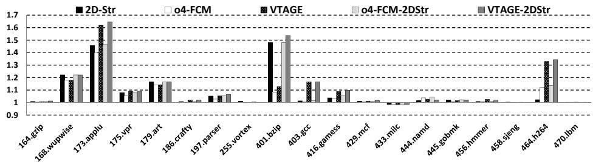
图像类型与来源
该图是论文中的 Figure 7(a): Speedup 。
展示的是不同 Value Prediction 方案在 squashing at commit 恢复机制下，相对于 baseline processor 的性能加速比。
该图重点比较：
2D-Stride o4-FCM VTAGE o4-FCM-2DStr hybrid VTAGE-2DStr hybrid
坐标轴含义
横轴：SPEC CPU2000 / CPU2006 benchmark。
纵轴：Speedup over baseline 。
纵轴范围约为 0.9 到 1.7 。
1.0 表示与 baseline 性能相同。高于 1.0 表示有加速。
低于 1.0 表示出现减速。
图中虚线网格以约 0.1 为间隔，便于观察性能差异。
图例
含义
类型
2D-Str 2-delta Stride predictor
computational predictor
o4-FCM order-4 Finite Context Method predictor
context-based predictor
VTAGE Value TAGE predictor
global branch-history-based predictor
o4-FCM-2DStr o4-FCM 与 2D-Stride 的 hybrid
hybrid predictor
VTAGE-2DStr VTAGE 与 2D-Stride 的 hybrid
hybrid predictor
总体趋势
VTAGE-2DStr hybrid 整体表现最好或接近最好 。2D-Stride 在部分程序中非常有效，尤其是具有明显 stride/value stream 行为的程序。VTAGE 在部分程序中优于传统 o4-FCM ，说明使用 global branch history/path history 的上下文信息具有价值。hybrid predictor 通常优于单一 predictor，尤其在 173.applu、401.bzip2、464.h264ref 等程序中收益明显。多数 benchmark 的加速较小，接近 1.0–1.1 ，说明并非所有程序都有足够的 value prediction 潜力。
Benchmark
最高加速方案
约略最高 speedup
观察
173.applu VTAGE-2DStr ≈1.65× 全图最高之一，hybrid 明显优于单一 predictor
401.bzip2 VTAGE-2DStr ≈1.54× hybrid 收益显著，2D-Str 与 VTAGE 互补
464.h264ref VTAGE / VTAGE-2DStr ≈1.33–1.34× VTAGE 表现突出，说明 control-flow context 对该程序有效
168.wupwise 2D-Str / hybrid ≈1.20–1.23× stride 类预测效果较好
179.art hybrid / 2D-Str ≈1.16–1.17× 多种 predictor 都有稳定收益
Benchmark
Speedup 范围
说明
164.gzip ≈1.00
几乎无收益
186.crafty ≈1.00–1.02
VP 可利用空间很小
255.vortex ≈1.00
几乎无明显变化
429.mcf ≈1.00–1.01
收益极低
433.milc ≈0.99–1.00
可能略有减速
445.gobmk ≈1.00–1.02
收益很小
458.sjeng ≈1.00
几乎无收益
470.lbm ≈1.00
无明显加速
Benchmark
2D-Str
o4-FCM
VTAGE
o4-FCM-2DStr
VTAGE-2DStr
主要结论
164.gzip ≈1.00
≈1.00
≈1.00
≈1.00
≈1.01
无明显收益
168.wupwise ≈1.20
≈1.17
≈1.18
≈1.22
≈1.21
2D-Str 与 hybrid 较好
173.applu ≈1.45
≈1.22
≈1.62
≈1.23
≈1.65
VTAGE-2DStr 最强
175.vpr ≈1.07
≈1.07
≈1.08
≈1.08
≈1.10
小幅收益
179.art ≈1.15
≈1.12
≈1.16
≈1.16
≈1.17
稳定中等收益
186.crafty ≈1.00
≈1.00
≈1.01
≈1.00
≈1.02
很小收益
197.parser ≈1.04
≈1.04
≈1.05
≈1.05
≈1.06
小幅收益
255.vortex ≈1.00
≈1.00
≈1.00
≈1.00
≈1.00
无收益
401.bzip2 ≈1.48
≈1.48
≈1.12
≈1.49
≈1.54
hybrid 明显最好
403.gcc ≈1.00
≈1.16
≈1.00
≈1.17
≈1.17
o4-FCM/hybrid 有收益
416.gamess ≈1.02
≈1.08
≈1.09
≈1.08
≈1.09
VTAGE 略优
429.mcf ≈1.00
≈1.00
≈1.01
≈1.01
≈1.01
极小收益
433.milc ≈0.99
≈0.99
≈0.99
≈0.99
≈1.00
接近无收益，略有风险
444.namd ≈1.00
≈1.02
≈1.03
≈1.03
≈1.04
小幅收益
445.gobmk ≈1.00
≈1.01
≈1.01
≈1.01
≈1.02
很小收益
456.hmmer ≈1.00
≈1.01
≈1.02
≈1.01
≈1.02
很小收益
458.sjeng ≈1.00
≈1.00
≈1.00
≈1.00
≈1.00
无明显收益
464.h264ref ≈1.01
≈1.12
≈1.33
≈1.32
≈1.34
VTAGE 主导收益
470.lbm ≈1.00
≈1.00
≈1.00
≈1.00
≈1.00
无收益
对单一 predictor 的比较
2D-Str
在 168.wupwise、173.applu、179.art、401.bzip2 上表现较好。
尤其 401.bzip2 中约 1.48× ，说明该程序存在强烈的 stride-like value pattern。
但在 403.gcc、464.h264ref 上不突出，说明纯 stride 机制覆盖不足。
o4-FCM
在 403.gcc、464.h264ref 上有较好表现。
但在 173.applu 上远弱于 VTAGE，显示 local value history 的上下文表达能力有限。
论文中也指出，o4-FCM 还存在现实硬件实现上的 back-to-back prediction critical path 问题。
VTAGE
在 173.applu、416.gamess、464.h264ref 上表现突出。
特别是 173.applu 和 464.h264ref ，说明这些程序的值结果与 global branch history / path history 有较强相关性。
相比 o4-FCM，VTAGE 更适合实际实现，因为它不依赖 local value history 的连续更新。
对 hybrid predictor 的比较
VTAGE-2DStr 通常优于 o4-FCM-2DStr 。原因在于：
2D-Stride 捕捉 arithmetic/stride pattern。VTAGE 捕捉 control-flow-correlated value pattern。两者覆盖的 instruction 集合具有互补性。
o4-FCM-2DStr 也能提升性能，但总体略弱于 VTAGE-2DStr 。在 173.applu 上差距非常明显：
o4-FCM-2DStr ≈1.23× VTAGE-2DStr ≈1.65× 说明 VTAGE 对该程序的上下文建模远优于 o4-FCM。
在 401.bzip2 上：
2D-Str ≈1.48× VTAGE ≈1.12× VTAGE-2DStr ≈1.54× 表明该程序主要依赖 stride pattern，但 VTAGE 仍能提供额外补充。
最重要的结论
Hybrid value prediction 是必要的 ：单一 predictor 很难在所有 benchmark 上占优。VTAGE-2DStr 是图中最有竞争力的方案 ，兼顾 stride pattern 与 branch-history context。VTAGE 比 o4-FCM 更适合作为 context-based predictor ：
性能更好或相近。
更容易支持 tight loop 中的 back-to-back prediction。
不需要复杂追踪每条指令最近 n 个 speculative values。
性能收益具有明显 workload dependence ：
部分程序可获得 30%–65% 的显著提升。
大量程序收益小于 5% 。
该图支撑论文核心观点：在使用 FPC confidence mechanism 保证高准确率后，结合 VTAGE + 2D-Stride 的 practical value predictor 可以在较少 OoO engine 修改的情况下获得可观性能提升。
5b4f7efc0433381dbcc42d12da1b1710ca92bb76aec52119d59c67a5e02c1bb1.jpg#
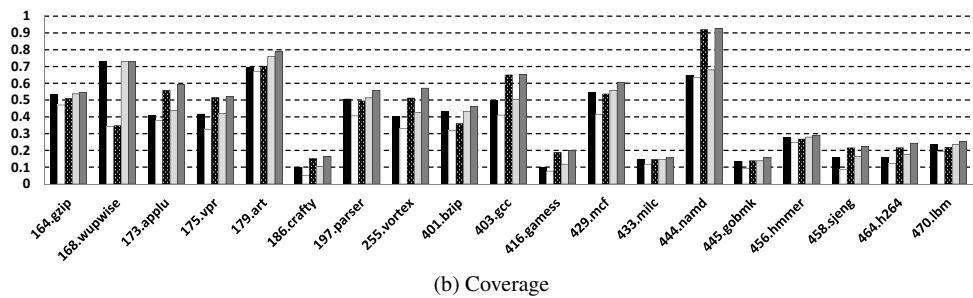
图片类型与位置
该图是论文 Figure 7 的子图 “(b) Coverage” 。
横轴为 SPEC CPU2000 / CPU2006 benchmark ，共 19 个程序 。
纵轴为 Coverage ，范围 0 到 1 ，表示 value predictor 对动态指令结果给出高置信预测的比例。
图中每个 benchmark 通常包含多根柱，表示不同预测器配置的覆盖率对比，主要围绕 2D-Stride、VTAGE、o4-FCM 及其 hybrid predictor 展开。
该图对应论文第 8.3 节 Hybrid predictors ，重点说明 VTAGE + 2D-Stride 相比单一预测器具有更高覆盖率，且通常优于 o4-FCM + 2D-Stride 。
核心结论
Coverage 差异非常显著 ：不同 benchmark 的可预测性差别很大，从约 0.1 到超过 0.9 。444.namd 覆盖率最高 ，接近 0.9–0.95 ，说明大量结果值可被高置信预测。186.crafty、416.gamess、433.milc、445.gobmk、458.sjeng、464.h264 等覆盖率较低，多数在 0.1–0.3 区间。179.art、168.wupwise、403.gcc、429.mcf 等覆盖率较高，说明这些程序存在明显的 value locality 或 stride-like pattern。Hybrid predictor 的覆盖率通常高于单一预测器 ，证明 computational predictor 与 context-based predictor 可预测的指令集合具有互补性。但论文同时指出：高 Coverage 不必然带来高 Speedup ，例如 444.namd 覆盖率极高，但由于该 benchmark 的 Value Prediction 加速潜力有限，性能提升并不突出。
Benchmark
Coverage 观察值范围
可预测性评价
主要现象
164.gzip 约 0.50–0.55
中等
多个配置覆盖率接近，hybrid 提升有限
168.wupwise 约 0.35–0.75
较高
不同预测器差异大，部分配置覆盖率显著更高
173.applu 约 0.40–0.58
中等偏高
context-based 与 hybrid 有一定收益
175.vpr 约 0.42–0.52
中等
覆盖率稳定，配置间差异不大
179.art 约 0.70–0.80
高
value pattern 明显，是 VP 友好型程序
186.crafty 约 0.10–0.17
低
难以预测，FPC 后覆盖率受限
197.parser 约 0.50–0.55
中等偏高
hybrid 可保持较好覆盖
255.vortex 约 0.40–0.57
中等
覆盖率有提升空间，但准确性压力较大
401.bzip2 约 0.38–0.48
中等
stride 类模式可能较重要
403.gcc 约 0.50–0.66
较高
VTAGE / hybrid 表现较好
416.gamess 约 0.10–0.20
低
高置信预测较少
429.mcf 约 0.55–0.62
较高
hybrid 覆盖率较稳定
433.milc 约 0.14–0.16
低
可预测结果比例很小
444.namd 约 0.65–0.92
极高
覆盖率最高，但 speedup 不一定最高
445.gobmk 约 0.13–0.17
低
控制流复杂，值模式难稳定
456.hmmer 约 0.20–0.30
低到中等
覆盖率有限
458.sjeng 约 0.15–0.23
低
预测机会较少
464.h264ref 约 0.15–0.25
低到中等
覆盖率低，但论文中其 speedup 可较明显
470.lbm 约 0.22–0.27
低到中等
覆盖率不高但较稳定
覆盖率区间
Benchmark
含义
高覆盖率：> 0.65 179.art、444.namd、部分 168.wupwise 值序列规律强，适合 Value Prediction
中高覆盖率：0.50–0.65 164.gzip、173.applu、175.vpr、197.parser、255.vortex、403.gcc、429.mcf 存在一定 value locality，hybrid 有实际意义
中低覆盖率：0.25–0.50 401.bzip2、456.hmmer、470.lbm 可预测指令有限，收益依赖关键路径位置
低覆盖率：< 0.25 186.crafty、416.gamess、433.milc、445.gobmk、458.sjeng、464.h264ref 高置信预测少，FPC 为保证准确性牺牲了覆盖率
不同 benchmark 的关键解读
444.namd
覆盖率接近 0.9 ，是图中最高。
说明大量动态指令结果可以被稳定预测。
但论文指出其 speedup marginal ，原因是即使预测成功，也未明显缩短关键路径，或者程序瓶颈不在数据依赖。
179.art
覆盖率约 0.7–0.8 。
对 Value Prediction 非常友好。
可能存在规则数组访问、循环计算或稳定数值模式。
403.gcc
覆盖率约 0.5–0.65 。
VTAGE 类基于 global branch history 的预测器可能更有效，因为编译器类程序控制流复杂，值结果与路径相关。
168.wupwise
不同柱之间差异明显，说明不同 predictor 对该程序捕获到的 pattern 不同。
2D-Stride 或 hybrid 可能捕获较多规则数值变化。
186.crafty / 445.gobmk / 458.sjeng
覆盖率低。
这类程序通常具有复杂控制流、搜索行为或不稳定数据结构访问，导致高置信 value pattern 较少。
464.h264ref
覆盖率不高，但论文中提到较小 coverage 仍可能带来明显 speedup。
这说明被预测的值可能位于 critical path 上，预测少量关键指令也能带来收益。
与 Figure 7(a) Speedup 的关系
该 Coverage 图不能单独决定性能收益。
Coverage 高 ≠ Speedup 高 ：
444.namd 是典型例子，覆盖率很高，但加速潜力有限。
Coverage 低也可能 Speedup 高 ：
h264ref 覆盖率较低，但如果预测命中关键依赖链，仍可能显著加速。
因此，Value Prediction 的实际收益由三者共同决定：
Coverage Accuracy 预测指令是否位于 critical path
与 FPC 的关系
图中配置使用 FPC / Forward Probabilistic Counters 。
FPC 的作用是牺牲一部分 Coverage，换取极高 Accuracy。
在论文中，FPC 使预测准确率通常达到 > 99.7% 。
这使得处理器可以使用更简单的 squashing at commit 机制，而不必依赖复杂的 selective reissue 。
因此，该 Coverage 图反映的是一种 高置信预测覆盖率 ，不是普通预测器在无严格置信过滤下的原始覆盖率。
Hybrid predictor 的意义
2D-Stride 属于 computational predictor，擅长预测规则递增、递减或周期性 stride pattern。VTAGE 属于 context-based predictor，利用 global branch history 与 path history ，擅长捕获与控制流相关的值模式。两者预测的指令集合并不完全重合，因此组合后 Coverage 通常提高。
图中多个 benchmark 的柱形显示 hybrid 覆盖率高于或接近最佳单一预测器，说明二者具有互补性。
论文认为 VTAGE + 2D-Stride 比 o4-FCM + 2D-Stride 更实用，因为：
VTAGE 更容易处理 back-to-back prediction 不依赖 per-instruction local value history
预测访问可跨多个 cycle 完成
更适合实际高频处理器实现
硬件实现层面的含义
覆盖率较高的 benchmark 表明 Value Prediction 有足够使用机会。
但由于 FPC 会过滤掉低置信预测，预测器不会盲目追求 Coverage。
这种设计符合论文主张：
优先保证极高 Accuracy 接受适度 Coverage 损失 避免复杂 selective reissue 将验证推迟到 commit time
图中 Coverage 仍能在多个程序达到 0.5 以上 ，说明即使在严格 FPC 过滤后，Value Prediction 仍具有实际利用空间。
总体评价
该图证明了 hybrid Value Prediction 在多数程序上可以维持可观 Coverage。
VTAGE + 2D-Stride 的组合兼顾控制流相关值模式与 stride 型数值模式，是论文推荐的实用方案。覆盖率最高的程序并不一定性能提升最大，说明未来设计还需结合 criticality estimation 。
该图支撑论文核心观点：在高准确率 FPC 的约束下，Value Prediction 仍能提供足够覆盖率，从而在不大幅改造 OoO engine 的情况下提升单线程性能。